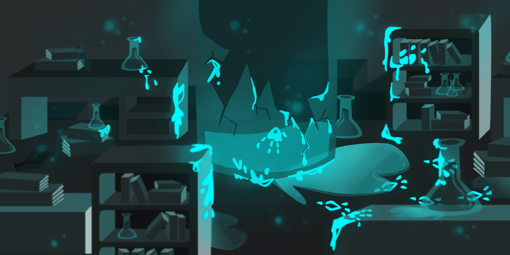
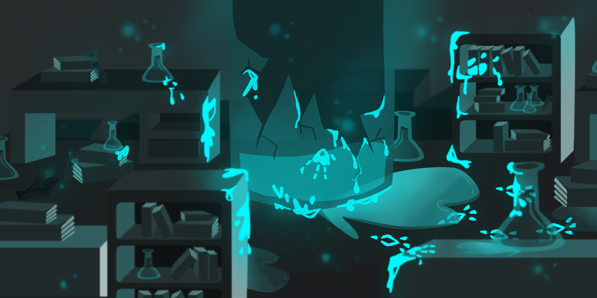

Redesigned Book Covers & Game Backgrounds

 

⟡ A redesign of existing books, Cats in Australia and The Cabaret of Plants, using both image based and illustrated designs.
⟡ Two backgrounds, one created to be tiled and repeated, and the other to stand independently. The former a storybook styled jungle, and the latter a cell shaded laboratory.
⟡ Created in Adobe Photoshop, and Clip Studio Paint.